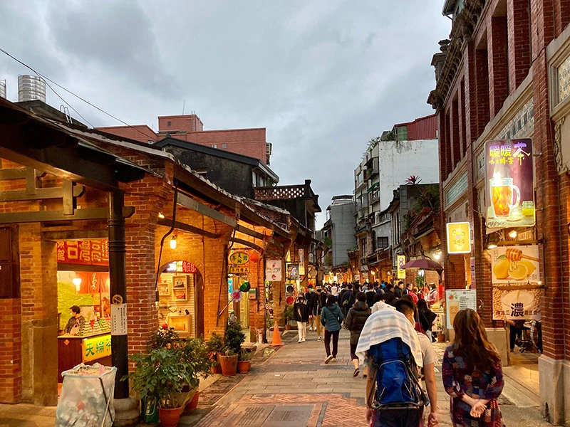
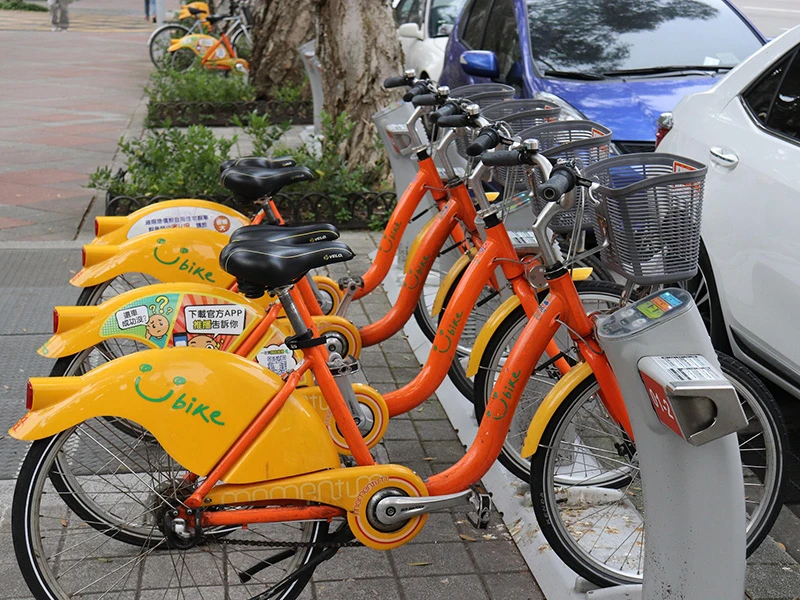
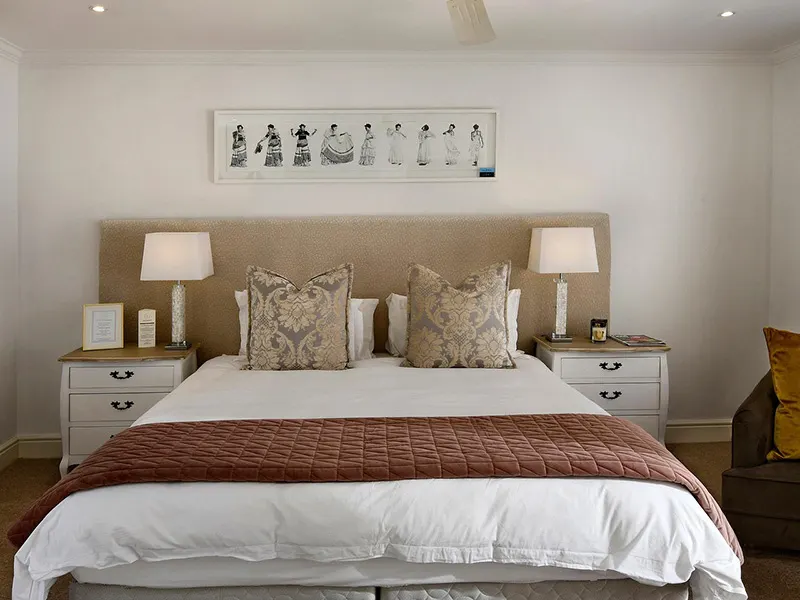

台中高美濕地
高美濕地擁有開闊的潮間帶與豐富生態，跟著潮汐，走進海風與夕陽。沿著木棧道慢慢前行，感受海風、濕地與天空交織出的自然風景。傍晚時分，夕陽映照水面，遠方風車與海岸線形成獨特景致。不需要匆忙趕行程，只要放慢腳步，看看潮水的變化、聽聽海浪的聲音，讓旅行成為親近自然、放鬆身心的一段時光。高美濕地重視生態保育，適合用更友善自然的方式探索台灣海岸。

彰化八卦山天空步道
八卦山天空步道全長約 1 公里，沿著八卦山淺山地形穿梭於樹林之間，走進綠意，讓城市慢慢遠去旅人可以從不同角度欣賞彰化的自然景觀與城市風景。一路不必趕路，沿著步道散步、呼吸新鮮空氣，感受樹梢間的光影變化，就是最舒服的旅行方式。對喜歡健走、自然與戶外活動的人來說，這是一段輕鬆又沒有負擔的綠色旅程，也很適合安排成半日慢旅行

南投清境農場
青青草原走進山的懷抱，找回生活的綠。 清境農場青青草原坐落於高山之間，遼闊草地與層層山巒形成開闊而療癒的景色。沿著園區步道慢慢散步，可以欣賞高原景致、感受山間微風，也能在草原上享受一段遠離城市喧囂的悠閒時光。這裡很適合親子、朋友或想讓自己放空一下的旅人。不需要安排滿滿的行程，給自己一點時間看看山、走走路、深呼吸，在自然裡重新找回舒服的生活節奏。
交通部觀光局台灣觀光旅遊的主管機關
提供深度體驗在地文化、綠色生態與低碳永續旅遊。全台熱門旅遊景點行程、國家風景區與在地美食導覽，提供最完整的自由行指南與交通資訊,開啟台灣質感慢旅，感受寶島自然與人文魅力。

旅遊前注意事項 安全旅遊最重要
輕鬆規劃出遊行程、掌握行前檢查清單，包含必備證件、旅遊保險、氣象預報與在地交通指南,做好準備，隨時掌握熱門景點最新動態與優質旅宿資訊，讓您的自由行與家族旅遊更安心順暢，享受完美的精彩假期。

住宿前注意事項住得安全玩得開心
出遊前掌握進退房時間、飯店備品規範、退訂政策與入住登記流程,預先確認飯店設施、周邊停車資訊及特色早餐服務，並選擇安心安全的優質旅宿與合法民宿,做好完整行前準備，輕鬆享受品質保障、無憂舒適的完美住宿體驗
